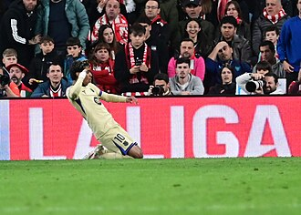
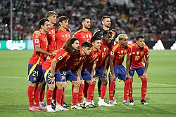
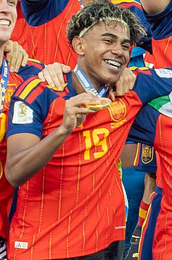

Lamine Yamal Nasraoui Ebana (Esplugas de Llobregat, Barcelona, 13 de julio de 2007) es un futbolista español que juega como extremo derecho en el F. C. Barcelona de la Primera División de España. Es internacional absoluto con la selección de España.
Criado en el barrio mataronense de Rocafonda, fue fichado para las divisiones juveniles de Barcelona y formado en La Masía. Debutó con el primer equipo en 2023 (15 años y 87 días), convirtiéndose en el jugador más joven en disputar un partido oficial con el Barcelona. Es también el futbolista más joven en marcar en la historia de El Clásico (17 años y 105 días). En su primera temporada completa, se consolidó como titular y fue reconocido como el «mejor futbolista joven del mundo» con el Trofeo Kopa otorgado por France Football y el Premio Golden Boy. En 2025 se convirtió en el único futbolista en conquistar de forma consecutiva el Trofeo Kopa, y obtuvo también el Balón de Plata como segundo mejor jugador del mundo. También fue incluido en el FIFPro World XI de 2025.

A la selección de fútbol de su país la ha representado en diversas categorías juveniles. Con 16 años y 57 días de edad, debutó con la selección absoluta, estableciendo un récord del jugador más joven en la historia de España de hacerlo así y también de marcar un gol. En 2024, representó a su país en la Eurocopa, donde España consiguió su cuarto título continental. Su actuación le valió el premio al «mejor jugador joven» del torneo. Es el jugador más joven en la Eurocopa en debutar y asistir (16 años y 338 días), además de anotar un gol (16 años y 361 días). En la Copa Mundial de Fútbol de 2026, levantó el segundo título mundial de su selección, y anotó un gol contra Arabia Saudita que lo colocó como el octavo jugador más joven en marcar un gol en una Copa Mundial de Fútbol (18 años y 343 días).
Orígenes y formación
Yamal nació el 13 de julio de 2007 en Esplugas de Llobregat, en el área metropolitana de Barcelona. Es hijo de Sheila Ebana, una camarera originaria de Bata, Guinea Ecuatorial, y Mounir Nasraoui, un pintor de edificios de Larache, Marruecos. Su nombre de pila compuesto honra a dos personas, Lamine y Yamal, quienes ayudaron económicamente a sus padres antes de su nacimiento.
Sus padres se separaron cuando él tenía tres años, aunque ambos continuaron presentes en su crianza. Inicialmente, la familia vivía en Mataró, pero tras la separación, su madre se mudó a Granollers, donde Yamal comenzó a jugar al fútbol en el club local La Torreta a los cuatro años. Alternaba su tiempo entre ambas ciudades. En Mataró, creció en Rocafonda, un barrio marginado y estigmatizado. La celebración de sus goles, las hace, mostrando con sus dedos el número 304, que son los últimos dígitos del código postal 08304 del lugar de su niñez.
Categorías inferiores
F. C. Barcelona (2014-2023)
A los seis años, fue descubierto por el Barcelona e invitado a entrenar en La Masia. En febrero de 2014, fue fichado y firmado por Albert Puig Ortoneda —actual responsable del fútbol formativo—, tras la captación y aprobación de Óscar Hernández Romero e Isidre Gil. Fue considerado una de las mayores promesas de la academia y se trasladó a Barcelona para vivir y entrenar en la academia.
Ingresó al equipo Prebenjamín del club, y su primer partido oficial con la camiseta azulgrana se disputó el 5 de octubre de ese mismo año en el Camp de Futbol de la Escola Industrial, donde anotó dos goles en la victoria por 2-3 frente al Don Bosco. Desde entonces, ha jugado en doce equipos diferentes dentro de la estructura formativa del Barcelona, siguiendo la progresión correspondiente a su edad. Durante cinco temporadas participó en el fútbol-7, donde acumuló 151 partidos y 301 goles, destacando especialmente en la temporada 2016-17 con el Benjamín A, donde marcó 79 goles en 32 partidos.
Posteriormente, ascendió al fútbol-11, donde hasta mediados de 2023 había disputado 98 partidos y anotado 56 goles. Su rendimiento fue afectado por la pandemia de COVID-19, que limitó su participación a 32 encuentros en las temporadas 2019-20 y 2020-21, aunque logró marcar 28 goles en ese periodo. A pesar de esta interrupción, su talento fue evidente, lo que le permitió ascender al Cadete A siendo un año menor que sus compañeros, donde anotó 20 goles en 32 partidos. Posteriormente, fue promovido al Juvenil A, consolidándose como una de las figuras del equipo.
Formativas y filiales en el club
Trayectoria
F. C. Barcelona (2023-presente)
2022-23: Temporada debut
Para la temporada 2022-23, fue incluido en el Juvenil A, una categoría superior a su edad. El 4 de septiembre de 2022, Xavi lo convocó para entrenar con el primer equipo junto a otros jugadores jóvenes. A pesar de no haber firmado aún su primer contrato profesional, fue uno de los futbolistas de la cantera que más llamó la atención del entrenador.
Su debut finalmente se produjo el 29 de abril de 2023, a los 15 años de edad, por un partido del Campeonato Nacional, oportunidad en que su equipo F. C. Barcelona enfrentaba a Real Betis. Yamal era suplente, ingresó con la camiseta número 41, como reemplazante de Gavi al final del segundo tiempo. En las primeras jugadas, intentó asociaciones con jugadores experimentados como Robert Lewandowski y hasta estuvo cerca de marcar un gol. Después del juego, Yamal recibió el respeto de los fanáticos, así como las reseñas de prensa:
«Lamine Yamal parece normal, pero no lo es».
Lamine Yamal, con 15 años y 290 días, se convirtió en el jugador más joven en disputar un partido de LaLiga con el Barcelona, superando el récord de Vicenç Martínez, quien debutó con 16 años y 280 días el 19 de octubre de 1941.[26] El 14 de mayo de 2023, el F. C. Barcelona se proclamó campeón de LaLiga tras vencer al Espanyol por 2 a 4 en el derbi disputado en Cornellà-El Prat. Con la consecución del título, Yamal, con 15 años y 305 días, se convirtió en el campeón más joven en la historia de la Liga, superando a su entonces compañero Ansu Fati.
2023-24: Consolidación e inclusión en la Eurocopa
En la temporada 2023-24, Yamal se consolidó en la alineación titular del Barcelona, jugando 50 partidos y anotando 7 goles, a la par de su debut oficial con la selección española. Destacó en el Trofeo Joan Gamper al participar en los tres goles de la remontada. Durante un partido contra Cádiz, se convirtió en el jugador más joven en ser titular en LaLiga con 16 años y 38 días. El 27 de agosto, en la victoria 4-3 contra Villarreal, dio una asistencia y se convirtió en el asistente más joven del siglo en la competición. El 8 de octubre, marcó su primer gol, jugando contra Granada en el Nuevo Los Cármenes. Barcelona acabaría segundo en el Nacional, y no lograría pasar a la semifinal de la Champions. Sin embargo, fue el jugador más joven en ser titular con el Barcelona en LaLiga, en dar una asistencia con 16 años y 45 días, en marcar un gol con el club y participar en un Clásico, así como el más joven en anotar un doblete en el torneo. Además, se convirtió en el primer jugador menor de 17 años en lograrlo. En la Champions League, fue el segundo jugador más joven en debutar —detrás de Youssoufa Moukoko—, el más joven en ser titular y el más joven en jugar en la fase de eliminatorias. En la Supercopa de España, se convirtió en el goleador más joven de la competición con 16 años y 182 días. En la Copa del Rey, también estableció un récord como el goleador más joven del torneo y recibió el premio Golden Boy The Youngest. Debido a su muy buen año, los principales clubes comenzaron a «ojear» al joven talento, pero Lamine rechazó a todos, renovando hasta 2026 con una cláusula de 1000 millones de euros.
2024-25
Para inicios de la temporada 2024-25, Lamine se perfilaba para ser uno de los incluidos en la Eurocopa que se celebraba en Alemania. Durante la Liga, su promedio goleador incrementó considerablemente, pasando de 0.14 del año pasado a 0.25 durante el actual campeonato. Siendo una figura creciente en el fútbol español, para Luis de la Fuente, el entrenador de la Selección en ese momento, Lamine era más que una figura de cambio y un proyecto a futuro. Así fue como, paso de entrar en la lista de pre-convocados, el 7 de mayo de 2024 Luis de la Fuente anunció los convocados a la Eurocopa y dejó sorpresivamente adentro a Yamal. Lamine disputó sus partidos con España, donde anotó un gol y se consagró campeón. En la prensa, el seleccionador español declararía lo siguiente:
«Lo llevo comentando durante 44 días y estos futbolistas son un ejemplo para la sociedad por los valores que representan. No sé si cambiaremos algo en la sociedad, pero la gente joven que vea a estos jugadores no como niños mimados, sino como gente que ha trabajado muchísimo».

Con la irrupción de Lamine, Barcelona mejoraría su rendimiento del año anterior. Yamal quedaría como máximo asistente del torneo por primera vez en su carrera, con 13 asistencias. En la Liga, Lamine disputó 35 partidos y marcó 9 goles, contribuyendo a una destacada campaña en la que el equipo se consagró campeón en la antepenúltima jornada, tras vencer al Espanyol. Se convirtió en el segundo goleador más joven en la historia de la Champions League al anotar ante el Mónaco. El 26 de octubre, se convirtió en el jugador más joven en marcar en un clásico frente al Real Madrid —17 años y 105 días—, en la victoria por 0-4 en el Santiago Bernabeú, superando la marca de Ansu Fati. El 12 de enero de 2025 ganó la Supercopa de España, frente al Real Madrid, siendo Lamine Yamal el autor de un gol en la final. Su tanto, en la Ciudad Deportiva del Rey Abdullah, y que significó el empate momentáneo barcelonista, lo convirtió en el goleador más joven en la historia del certamen, con 17 años y 182 días. El 2 de febrero, batió un récord de Lionel Messi al completar 21 regates en un partido contra el Alavés. El 26 de abril ganó la Copa del Rey, también frente al Real Madrid, siendo el autor de dos asistencias en la final. Su rendimiento le valió el Trofeo Kopa y Golden Boy, premios que reconocen al mejor futbolista del fútbol mundial y europeo menor de 21 años, respectivamente. Además recibió el reconocimiento a Deportista Revelación del Año en los Premios Laureus. En este año, designó oficialmente como su representante a Jorge Mendes, quien asumió la responsabilidad de guiar su carrera y negociar contratos clave.
Selección nacional
Antes de ser convocado por la Selección absoluta, desde 2022, la Federación de Fútbol de Marruecos y el director técnico de la Selección Marroquí, Walid Regragui, mantuvieron conversaciones con Lamine Yamal y su entorno para convencerlo de jugar para Marruecos. Aunque Yamal es español por nacimiento, gracias a sus raíces marroquíes por parte de su padre tenía la posibilidad de jugar junto a Los Leones del Atlás. Regragui insistió por más de un año, hasta que en 2023 Yamal le comunicó su decisión de jugar en la Selección Española, su mayor conexión con España y su rápido crecimiento en las categorías inferiores lo motivaron a rechazar la oferta proveniente de Marruecos.
Dos o tres días después de hablar con él me llamó con respeto y me dijo "míster, gracias por el cariño pero voy a elegir a España. Me siento español". Es un chaval muy honesto.
Walid Regragui
Primeras convocatorias y campeón de la Eurocopa (2023-2025)

Lamine Yamal debutó oficialmente con la Selección Española absoluta el 8 de septiembre de 2023, ante Georgia en Boris Paichadze Dinamo Arena, con tan solo 16 años. Previo al debut, apenas había disputado 9 partidos con Barcelona y Luis de la Fuente, entrenador de la Selección en aquel entonces, le anunció a Yamal que contaría con él para el próximo partido. Yamal entró en el final del primer tiempo, en reemplazo de Dani Olmo, con el partido ya liquidado 4 a 0 a favor de los españoles. En cuarenta minutos de juego, convirtió su primer gol, lo que le convirtió en el futbolista más joven de la historia en jugar y marcar para España, a la edad de 16 años y 57 días. Asimismo, el más joven en marcar en una fase de clasificación para la Eurocopa, tras superar a su compañero de equipo Gavi. Luego del partido, Yamal confesaría que aquel día «estaba viviendo un sueño».
Tras haber jugado varios partidos para la Selección durante 2024, en ese año Luis de la Fuente lo convocó para jugar la Eurocopa celebrado en Alemania. Yamal se encontraba concentrado junto a otros veintiocho jugadores en un predio ubicado en Donaueschingen, utilizado por la RFEF como lugar de entrenamiento, cuando el 7 de mayo de 2024 el entrenador le comunicó que iba a tenerlo en cuenta, ya que era la figura indiscutida de Barcelona y del fútbol español, por lo que su rendimiento en el campeonato fue excelso. Registró una asistencia durante la fase de grupos, donde España salió primera contra Italia, Croacia y Albania. En octavos de final, apabullaron a Georgia por 4 a 1 con otra asistencia de Yamal, en cuartos de final, eliminaron a Alemania, y en semifinales, se enfrentaron a Francia. Yamal, convirtió el primer tanto, lo que fue uno de los goles del torneo —el jugador más joven en marcar en una Eurocopa, a la edad de 16 años y 362 días—, seguido por otro marcado por Dani Olmo, la otra gran figura del equipo. En la final, vencieron a la Inglaterra por 2 a 1, con un gol de Nico Williams, y de Mikel Oyarzabal, coronando a España como campeona de Europa en el Estadio Olímpico de Berlín ante 65 mil espectadores que quedaron maravillados por los talentos de aquel joven Yamal —el jugador más joven en ganar la Eurocopa, con 17 años y un día de edad, quien recibió el Premio al mejor jugador joven del torneo y fue el máximo asistente, con cuatro asistencias e incluido en el once ideal del torneo junto a otros cinco futbolistas españoles. Luego de ganar el torneo, la delegación española, con Luis de la Fuente a la cabeza, fue recibida por Pedro Sánchez, Felipe VI y la Familia real en el Palacio de la Zarzuela.
Primera participación en la Copa Mundial de Fútbol y campeón del torneo (2026-presente)

Tras su consagración en el campeonato europeo, Yamal continuó brillando en el fútbol español, ganando su sexto título a nivel clubes con la obtención del Campeonato de Liga 2025-26 con el FC Barcelona. Por ello, había mucha expectativa en los medios y aficionados españoles por su estreno mundialista en Estados Unidos, México y Canadá, sumado a su reciente lesión con el club blaugrana.[61] Yamal abandonó sus entrenamientos con el Barcelona para enfocarse en sesiones de fisioterapia para desinflamar y cicatrizar la musculatura del muslo dos meses antes de que la delegación viajara a Norteamérica para disputar el certamen.[62] Luis de la Fuente realizó una convocatoria donde mezcló a los campeones vigentes de la Euro junto a las jóvenes promesas que ganaron ese mismo torneo, convirtiendo a España en una de las principales candidatas a revalidar el título.[63] Por otro lado, Yamal se incorporó el 30 de mayo a la selección sin tener el alta médica.[64]De la Fuente aseguró, días antes del debut en el torneo, que «los médicos nos dicen que Lamine está en perfectas condiciones, no para 90 minutos, sí para participar durante un tiempo, esto lo dice la lógica deportiva».[65
Yamal debutó en la Copa del Mundo el 15 de junio de 2026 contra Cabo Verde en el Mercedes-Benz Stadium ante 67 mil espectadores. Aquella tarde, España empataría por 0 a 0, y tanto Yamal como el equipo no tuvieron una gran actuación. Seis días después, el equipo logró repuntar con una goleada a Arabia Saudita por 4 a 0, donde Lamine marcó su primer gol en el torneo, y terminó de sellar su clasificación a los dieciseisavos de final con una victoria ante Uruguay por 1 a 0. En la siguiente fase, España se enfrentó a la Austria de David Alabamayores complicaciones y venció 3 a 0 a los austriacos. Para los octavos de final, los españoles debían enfrentarse a uno de los candidatos al título: Portugal. Ante los portugueses, España ganó con un solitario gol de Merino a los minutos de descuento del segundo tiempo. En los cuartos de final eliminó a Bélgica, el triunfo por 2 a 1, con el descuento marcado por Charles De Ketelaere, le permitió a España alcanzar las semifinales. La semifinal fue el 14 de julio frente a Francia en el AT&T Stadium. Los franceses habían alcanzado esa instancia tras clasificar como primeros en el Grupo I, vencer a Suecia en dieciseisavos de final, a Paraguay en octavos y a Marruecos en cuartos. España, ya con un Lamine Yamal envalentonado, no tuvo mayores complicaciones y venció 2 a 0 a los franceses. La final, fue contra Argentina el 19 de julio ante 80 mil espectadores. El encuentro se mantuvo con la posesión de balón de los españoles superior al de los argentinos, Ferrán Torres convirtió el único gol a los 106 minutos, y España fue campeona del mundo por segunda vez en la historia, dieciséis años después de su primer título.
Participaciones en Eurocopas
(tabla)
Participaciones en Copas del Mundo
(tabla)
Goles internacionales
Artículo principal:Anexo:Goles internacionales de Lamine Yamal
(tabla)
Perfil de jugador
Estilo de juego
Lamine Yamal tiene un estilo de juego dinámico y versátil. Su principal fortaleza radica en su velocidad y habilidad de regate, que le permite superar a los defensores con facilidad. Es un delantero zurdo con capacidad de regate, pase y gol, que puede jugar tanto de delantero centro como de centrocampista ofensivo o de extremo, principalmente por la banda derecha.Además, su capacidad para hacer pases precisos y asistir a sus compañeros le ha permitido destacarse no solo por su capacidad de gol, sino también por su visión de juego.
Desde sus inicios Yamal demostró madurez en el campo. Su toma de decisiones rápida y precisa lo ha hecho sobresalir en competiciones internacionales, como la Eurocopa 2024, donde fue aclamado por su rendimiento. Su estilo de juego ha sido comparado con el de Lionel Messi, debido a sus habilidades técnicas similares, como su control de balón en espacios reducidos y su capacidad para finalizar jugadas de forma efectiva.Yamal también ha citado al exjugador del Barcelona Neymar como una gran influencia en su propio estilo de juego.
Recepción
Lamine Yamal recibió una recepción positiva de la prensa deportiva internacional, que lo consideraría uno de los jóvenes talentos más prometedores del fútbol mundial. Su actuación en la Eurocopa 2024, donde se convirtió en el goleador más joven de la historia del torneo, consolidó su estatus como una de las grandes promesas del fútbol. Medios como The Guardian, L'Equipe y La Gazzetta dello Sport, lo han comparado con figuras como Lionel Messi, destacando su capacidad de regate, su velocidad y su visión de juego.
El rendimiento de Lamine con la selección española, en particular su gol en la semifinal contra la selección de Francia, fue aclamado como una «joya» y una muestra de «madurez y habilidad», a pesar de su juventud.
Vida personal
Cuando era un bebé, apareció en una sesión fotográfica benéfica de Unicef en 2007 junto a su futuro club, el F. C. Barcelona, durante la cual fue bañado por un Lionel Messi de veinte años. Las imágenes se volvieron virales en internet debido a que ambos jugadores se enfrentarían como las estrellas de sus respectivas selecciones en la Final de la Copa Mundial de Fútbol de 2026.
Relaciones sentimentales
En 2025, se hizo público su romance con la cantante Nicki Nicole, aunque la relación culminó luego de dos meses de haberse hecho conocida.
Religión
Lamine Yamal es musulmán.
Estadísticas
Artículo principal: Anexo:Estadísticas de Lamine Yamal
Clubes
Actualizado al último partido disputado el 17 de octubre de 2026
(tabla)
Selección nacional
Artículo principal:Anexo:Partidos de Lamine Yamal en la Selección Española
Actualizado al último partido jugado el 26 de septiembre de 2026
(tabla)
Fuentes: RFEF - UEFA - Transfermarkt
Resumen estadístico
Goles
(tabla)
Datos actualizados al 26 de septiembre de 2026.
Asistencias
(tabla)
Datos actualizados al 26 de septiembre de 2026.
Goles y asistencias
(tabla)
Datos actualizados al 3 de octubre de 2026.
- Nota
- A'^' Partidos disputados en Copa del Rey y Supercopa de España.
- B'^' Partidos disputados en Liga de Campeones de la UEFA.
- C'^' Partidos disputados en Campeonato Sub-17 Europeo de la UEFA.
Palmarés
Campeonatos nacionales
(tabla)
Campeonatos internacionales
(tabla)
Distinciones individuales
(tabla)